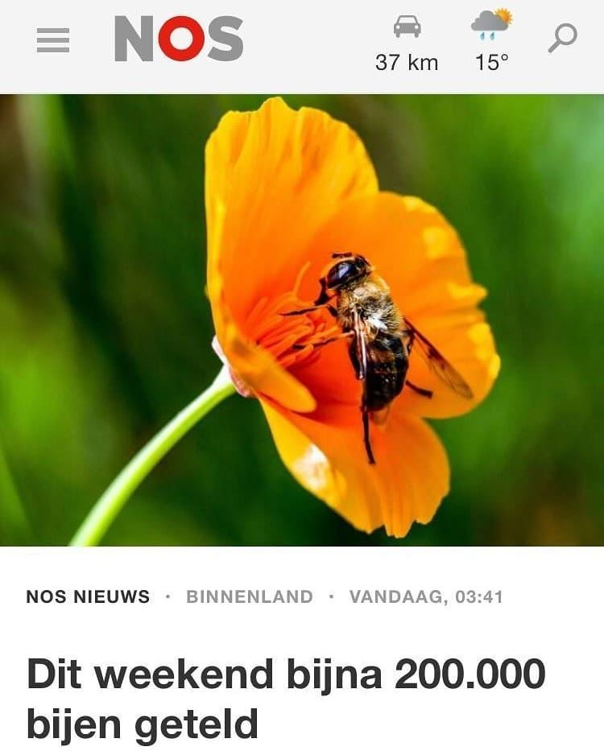

Blinde bij, geen bij
19 april 2021 · NOS, Nationale Bijentelling
- Op de foto
- Blinde bij (zweefvlieg)
- Het ging over
- Bij

Afgelopen weekend was natuurlijk de @nationalebijentelling. Erg geslaagd met veel deelnemers en getelde bijen. Hopelijk hebben de tellers wel echt bijen geteld, en geen zweefvliegen.
De @nos heeft in ieder geval een heel jaar om weer te oefenen.
Op de foto staat namelijk de Blinde bij, die een beetje verwarrend is, maar toch echt een zweefvlieg!
Ingestuurd door @_timdeboer_